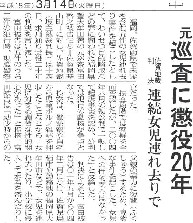

日本の刑法で、もっとも思い刑罰は死刑。その次が無期懲役。以下、懲役期間の長い順の有期刑となっている。
死刑の次に重く、おまけに無期というのだから、高校生の頃まで“無期懲役＝一生 刑務所暮らし”と思っていた。ところが某大学で猛勉強にあけくれているとき、“無期懲役＝刑期を定めない懲役 → 話によっては３日で出所”てな話を聞いてびっくり仰天。
もちろん“話によっては３日で出所”というのはオーバーだが、“一生 刑務所暮らし”という話でないことはたしか。そこで有期懲役よりはるかに短い無期懲役という状態も生じるらしい。
3/14の新聞記事。
わいせつ目的で女児つれさり事件を起こした元巡査に懲役20年の判決がなされた。もちろんとんでもないヤローなので、懲役20年でも軽すぎるくらい。

その反面、山口県光市で起きた母子 強姦殺人事件。犯行当時未成年(18歳)であった加害者に更生の余地があるとして、一審
二審とも死刑ではなく無期懲役の判決。しかし“無期懲役＝刑期が定められていない → 犯行当時 未成年 なので 最短 ７年で出所”の可能性があるという。
あのとんでもない元巡査でも、懲役20年ともなれば
いくら模範囚になっても７年では仮釈放の対象にもならない。それが最初から７年の仮釈放の可能性があるなどと云うのはいくら何でもおかしかない？。
こんな矛盾が生じるのは“死刑の次に重い刑罰は無期懲役”という日本の刑法のせい。そこでアメリカのように終身刑を設けるべきではないかと前から思っている。また有期刑でも、加算方式に改めるべきだ。
＃たとえば窃盗でも、現在では初犯とか常習犯という感じで裁いている。これを犯罪回数に応じて、懲役年数を加算する。すると窃盗でも、懲役20年という拘束期間になり得る。
光市事件では、今回、最高裁で異例の口頭弁論が開かれることになって、一審
二審の判決がくつがえされる可能性がでてきた。そしたら死刑制度反対の弁護団が、裁判欠席の非常手段に打って出た。
死刑制度反対にはそれなりのポリシーもあるんだろうから、とやかく言うつもりはない。だからといって“死刑反対だから無期懲役を”というんではなくて、日頃から終身刑制度の導入運動をなぜしないのかと思うしだい。
|